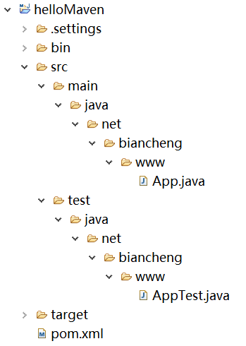

创建Maven项目
Maven 提供了大量不同类型的 Archetype 模板，通过它们可以帮助用户快速的创建 Java 项目，其中最简单的模板就是 maven-archetype-quickstart，它只需要用户提供项目最基本的信息，就能生成项目的基本结构及 POM 文件。
打开命令行窗口，跳转到 D:\maven 目录，执行以下 mvn 命令。
参数说明：
Maven 开始进行处理，并创建一套完整的 Maven 项目目录结构。
目录及文件说明：
Maven 创建项目时，还自动生成了两个Java 文件： App.java 和 AppTest.java。其中 App.java 位于 src/main/java 下 ，代码如下。
AppTest.java 位于 src/test/java 下，代码如下。
创建 Maven 项目
下面我们将通过 maven-archetype-quickstart 原型，在 D:\maven 目录中创建一个基于 Maven 的 Java 项目。打开命令行窗口，跳转到 D:\maven 目录，执行以下 mvn 命令。
mvn archetype:generate -DgroupId=net.biancheng.www -DartifactId=helloMaven -DarchetypeArtifactId=maven-archetype-quickstart -DinteractiveMode=false
参数说明：
- -DgroupId: 项目组 ID，通常为组织名或公司网址的反写。
- -DartifactId: 项目名。
- -DarchetypeArtifactId: 指定 ArchetypeId，maven-archetype-quickstart 用于快速创建一个简单的 Maven 项目。
- -DinteractiveMode: 是否使用交互模式。
Maven 开始进行处理，并创建一套完整的 Maven 项目目录结构。
[INFO] Scanning for projects... [INFO] [INFO] ------------------< org.apache.maven:standalone-pom >------------------- [INFO] Building Maven Stub Project (No POM) 1 [INFO] --------------------------------[ pom ]--------------------------------- [INFO] [INFO] >>> maven-archetype-plugin:3.2.0:generate (default-cli) > generate-sources @ standalone-pom >>> [INFO] [INFO] <<< maven-archetype-plugin:3.2.0:generate (default-cli) < generate-sources @ standalone-pom <<< [INFO] [INFO] [INFO] --- maven-archetype-plugin:3.2.0:generate (default-cli) @ standalone-pom --- [INFO] Generating project in Batch mode Downloading from central: https://repo.maven.apache.org/maven2/org/apache/maven/archetypes/maven-archetype-quickstart/1.0/maven-archetype-quickstart-1.0.pom Downloaded from central: https://repo.maven.apache.org/maven2/org/apache/maven/archetypes/maven-archetype-quickstart/1.0/maven-archetype-quickstart-1.0.pom (703 B at 992 B/s) Downloading from central: https://repo.maven.apache.org/maven2/org/apache/maven/archetypes/maven-archetype-bundles/2/maven-archetype-bundles-2.pom Downloaded from central: https://repo.maven.apache.org/maven2/org/apache/maven/archetypes/maven-archetype-bundles/2/maven-archetype-bundles-2.pom (1.5 kB at 2.3 kB/s) Downloading from central: https://repo.maven.apache.org/maven2/org/apache/maven/archetype/maven-archetype-parent/1/maven-archetype-parent-1.pom Downloaded from central: https://repo.maven.apache.org/maven2/org/apache/maven/archetype/maven-archetype-parent/1/maven-archetype-parent-1.pom (1.3 kB at 2.1 kB/s) Downloading from central: https://repo.maven.apache.org/maven2/org/apache/maven/archetypes/maven-archetype-quickstart/1.0/maven-archetype-quickstart-1.0.jar Downloaded from central: https://repo.maven.apache.org/maven2/org/apache/maven/archetypes/maven-archetype-quickstart/1.0/maven-archetype-quickstart-1.0.jar (4.3 kB at 7.4 kB/s) [INFO] ---------------------------------------------------------------------------- [INFO] Using following parameters for creating project from Old (1.x) Archetype: maven-archetype-quickstart:1.0 [INFO] ---------------------------------------------------------------------------- [INFO] Parameter: basedir, Value: d:\maven [INFO] Parameter: package, Value: net.biancheng.www [INFO] Parameter: groupId, Value: net.biancheng.www [INFO] Parameter: artifactId, Value: helloMaven [INFO] Parameter: packageName, Value: net.biancheng.www [INFO] Parameter: version, Value: 1.0-SNAPSHOT [INFO] project created from Old (1.x) Archetype in dir: d:\maven\helloMaven [INFO] ------------------------------------------------------------------------ [INFO] BUILD SUCCESS [INFO] ------------------------------------------------------------------------ [INFO] Total time: 43.367 s [INFO] Finished at: 2021-03-02T16:06:07+08:00
目录结构
进入 D:\maven 目录， 我们看到 Maven 已经创建了一个名为 helloMaven 的 Java 项目（在 artifactId 中指定的），该项目使用一套标准的目录结构，如下图所示。

图1：Maven 项目目录结构
目录及文件说明：
- helloMaven：项目名，包含 src 文件夹和 pom.xml。
- src/main/java：用于存放项目的 Java 文件。
- src/main/resources：用于存放项目资源文件。
- src/test/java：用于存放所有测试 Java 文件，如 JUnit 测试类。
- src/test/resources ：用于存放测试资源文件。
- target：项目输出位置，用于存放编译后的文件。
- pom.xml：Maven 项目核心配置文件。
Maven 创建项目时，还自动生成了两个Java 文件： App.java 和 AppTest.java。其中 App.java 位于 src/main/java 下 ，代码如下。
package net.biancheng.www;
/**
* Hello world!
*/
public class App {
public static void main(String[] args) {
System.out.println("Hello World!");
}
}
AppTest.java 位于 src/test/java 下，代码如下。
package net.biancheng.www;
import junit.framework.Test;
import junit.framework.TestCase;
import junit.framework.TestSuite;
/**
* Unit test for simple App.
*/
public class AppTest
extends TestCase {
/**
* Create the test case
*
* @param testName name of the test case
*/
public AppTest(String testName) {
super(testName);
}
/**
* @return the suite of tests being tested
*/
public static Test suite() {
return new TestSuite(AppTest.class);
}
/**
* Rigourous Test :-)
*/
public void testApp() {
assertTrue(true);
}
}
注：本节侧重点在于使用 maven-archetype-quickstart 原型快速创建一个简单的 Maven 项目，为后续的学习做准备。对于 archetype 了解即可，在后面的 Maven Archetype 模板 中会详细讲解。
关注公众号「站长严长生」，在手机上阅读所有教程，随时随地都能学习。内含一款搜索神器，免费下载全网书籍和视频。

微信扫码关注公众号